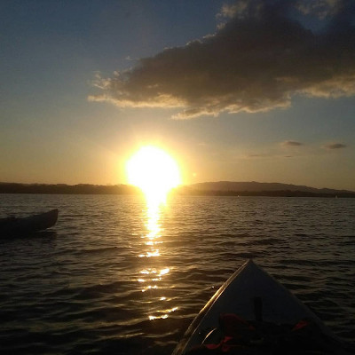
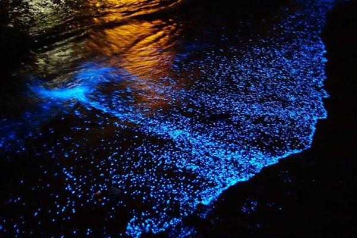

Tour de Kayack Atardecer
Este tour despejará tu mente de cualquier problema, solo dejate llevar por las olas del mar y su bello canto. El lugar de salida es de la playa principal de Puerto Jiménez, se bordea la costa en busca de encontrar la suerte de ver delfines, se hace un decenso en la playa Puntarenitas donde usted pueda bañarse y disfrutar de la arena, mientras se aprecia la puesta del sol, una vez que termine este acto se devuelve al punto de inicio. Hora de salida: 3:00 pm Hora de regreso: 6:00 pm Mínimo de personas: 2pax Máximo de personas: 20pax Este incluye: Agua, frutas, bolsa seca y todo el equipo necesario.
Tour de Kayack de Manglar
Definitivmente si lo tuyo es ver animales mientras remas, te recomendamos este tour, podrás ver monos, aves, reptiles (caiman,basilisco, y serpientes) y cangrejos. Durante el recorrido nuestro guía te dará una descripción de las diferentes especies de manglar que tenemos en la zona sur, daremos una vuelta para realizar una parada de 15 minutos en la playa Puntarenitas, donde usted podrá disfrutar de sus tranquilas aguas. El lugar de salida es de la playa principal de Puerto Jiménez y la hora de salida dependerá de la marea, el tour tiene una duración de 3 horas, e incluye: agua, frutas, bolsa seca y todo el equipo que usted necesitará. Mínimo de persona: 2pax Máximo de personas: 20pax

Tour de Bioluminicencia
Le invitamos a disfrutar de este fascinante fenómeno natural, la bioluminicencia es un proceso que se da en algunos seres vivos, solo se puede apreciar en la playa durante la noche, o tan solo con el movimiento del agua se forma un destello de luz. Se sale de la playa principal de Puerto Jiménez, si hay posibilidad de ingresar por el manglar (ya que depende de la marea) sino se bordea la costa y se hace una parada de 15 minutos para que usted pueda tomar fotos del atardecer y disfrutar de un baño en las tranquilas aguas de la playa Puntarenitas, mientras espera que la oscuridad caiga para apreciar el plantón y brindar información sobre este fenómeno. Hora de salida: 4:00pm Hora de regreso: 7:00pm Mínimo de personas: 2pax Máximo de personas: 20pax Este tour incluye: Agua, frutas, bolsa seca y todo el equipo que usted necesitará.
Tour de Kayack Amanecer
No hay mejor que iniciar el día con una espectacular vista del amanecer y llenar tus pulmones de aire puro y fresco, es como cargar tus baterias internas. Se sale de la playa principal de Puerto Jiménez, bordeando la costa para apreciar la salida del sol, si hay posibilidad de ingresar por el manglar (ya que depende de la marea), sino se continua con el viaje por la costa en espera de ver los hermosos delfines. Hora de salida: 5:00am Hora de regreso: 8:00am Mínimo de personas: 2pax Máximo de personas: 20pax Este tour incluye: Café, agua, frutas, té, bolsa seca y todo el equipo que usted necesitará.

Tour de Kayack de Pesca Artesanal
Si te gusta la aventura y poner en práctica tus habilidades de pesca, este tour es ideal para ti, podrás sentir la adrenalina correr por tu cuerpo, cuando se te enganche un pescado a tu carnada y midan la fuerza el uno con el otro. Se sale de la playa principal de Puerto Jiménez, se busca el mejor punto de pesca y que comience la acción, en el transcurso de la pesca, puede ser visitado por delfines que salen también a cazar. La hora de salida la dispone el cliente. Mínimo de personas: 2pax Máximo de personas: 20pax Este tour incluye: Agua, frutas, bolsa seca y todo el equipo que usted necesitará.

Tour de Kayack de Snorkel
Si te gusta el buceo a ras de agua, para observar la vida marina, mientras te olvidas de tu entorno y solo disfrutas del golf, no pierdas la oportunidad de reservar este tour, el cual se realiza en la playa de Sándalo, ubicada aproximadamente a unos 8 km de Pueto Jiménez. Este golfo es reconocido por ser un fiordo y al mismo tiempo cuna de reproducción de las especies marinas. Puedes llegar a la playa de Sándalo en tu propio vehículo o bien nosotros te podemos llevar hasta allá. La hora de salida depende de la marea (debe ser baja). Mínimo de personas: 2pax Máximo de personas: 20 pax Este tour incluye: Agua, frutas, bolsa seca y todo el equipo que usted necesitará